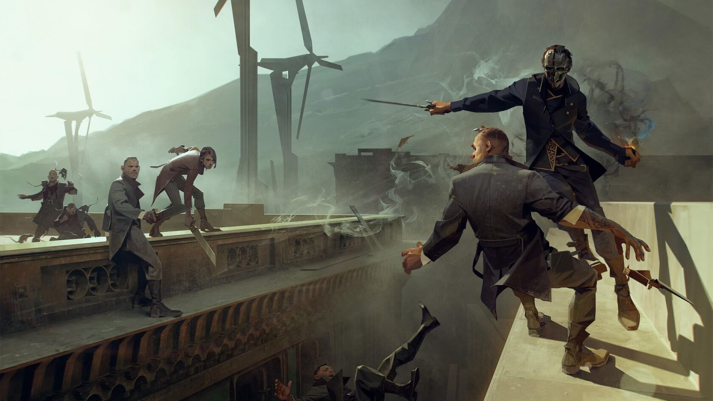
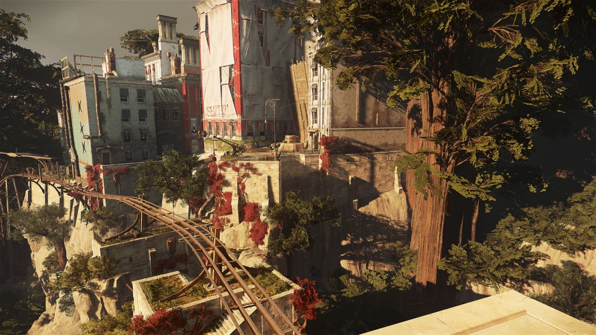
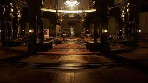
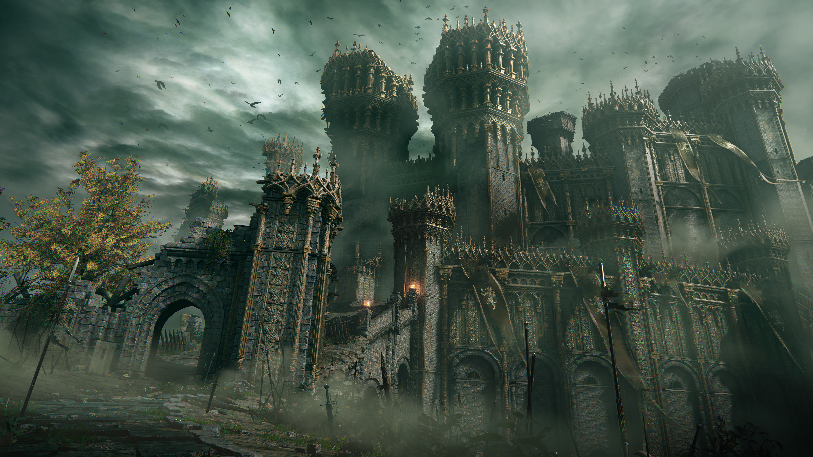
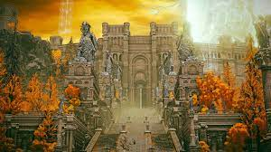
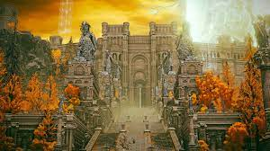
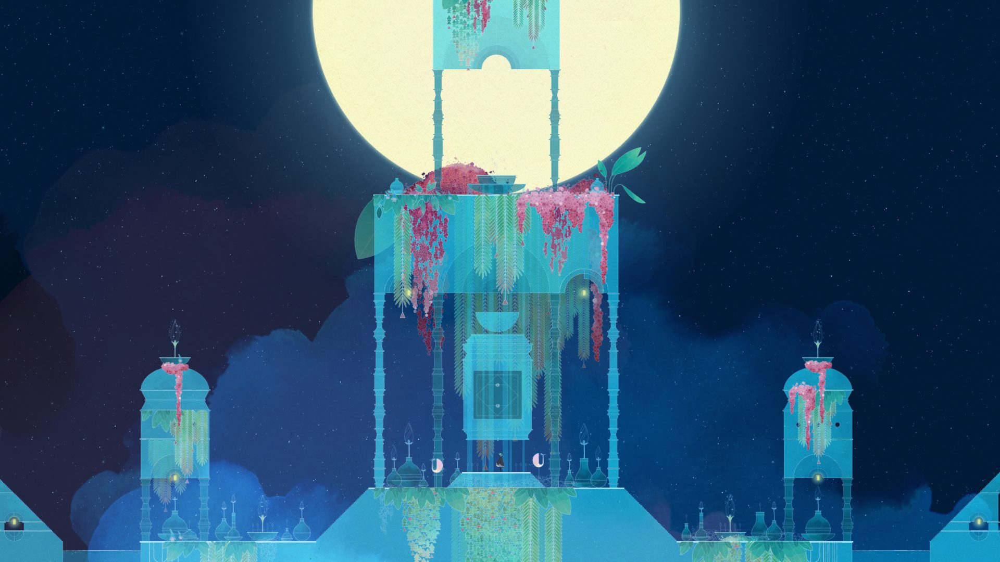

Video Games
Dishonored by Arkane Studios
The things you can do in the real world is virtually infinite. One decision creates a ripple effect, and can shape the future trajectory of your life. This is really difficult to do in a game. A video game is hard-coded; it boils down to lines of code, and having the ever-expanding set of possibilities found in the real world is almost a pipe-dream. A genre that comes close is the immersive sim.
 One key feature of immersive sims is emergent gameplay, made possible by the very robust system logic implemented by the developers. Emergent gameplay occurs when players perform many simple actions that, when executed together, can lead to uniquely complex outcomes.
Many of these outcomes are unique to the player, rarely replicated by others, and many are never anticipated by the developers themselves. In Dishonored, some of the possible moves are to slow down time, throw bottles at enemies, and attaching explosives to surfaces. While these three actions are very simple, the systemic nature of the game allows combining them to create interesting outcomes. A player can throw a bottle to an enemy, stop time just before it hits them, attach the explosive to the bottle, run away, and resume time to eliminate this enemy with the explosive bottle. If you've ever wanted to simulate being a real assassin, using the rules of this game world to your advantage, this game's the one.
Elden Ring by FromSoftware
When you come across a beautiful piece of media, it can often feel too good to be true. When I watched Everything Everywhere All at Once, I never wanted to end. Unfortunately, everything comes to an end. Then I played Elden Ring. I marvelled at the beauty of the open vistas, the haunting glow of a distant castle. I never wanted it to end. With a runtime of nearly 100 hours, I can rest easy knowing that I can return to this place for the weeks to come.
Another mind-boggling realization I had about the game was of its many secrets. With every stretch of land you explore, there's likely a hidden dungeon just off the cliff. In every rooftop, there's likely another path below the ledge.
 

The fact that the developers managed to build a world this expansive, with each corner of the world so dense with activity, is nothing short of a human feat.
Gris by Nomada Studio
This is a much more accessible mobile game. It's a gorgeous platformer about a mother and daughter.


The backgrounds are all hand-illustrated watercolor paintings, and each level comes alive with a different theme and color palette.
Pair this with one of the best soundtracks in gaming, playing Gris feels like a calming and meditative journey of loss and acceptance.
